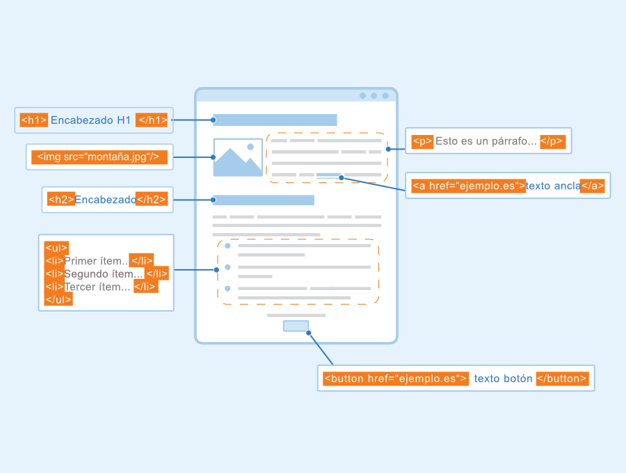

Etiquetas Semanticas
las etiquetas semanticas nos sirven como un mecanismos automatico como lo es un navegador web nos indiquen con exactitud a que parte de contenido corresponden a ese sitio web, las etiquetas semanticas estructurales como "section" utilizada para representar secciones o subsecciones acompañadas de uni h1 -h6 que le dan dimencion a las letras otras etiquetas como article, aside, footer, hgroup, entre otras mas. 